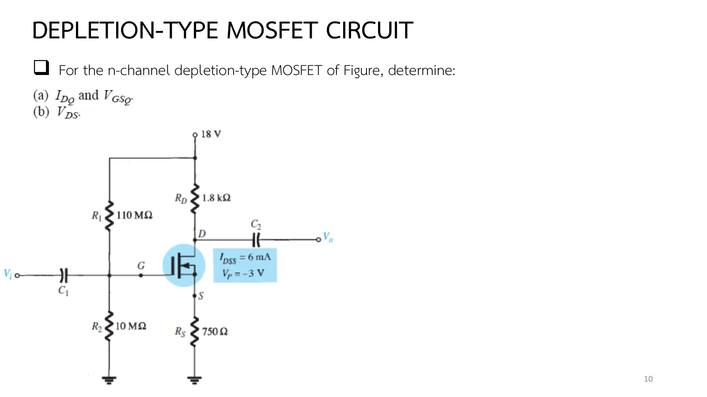
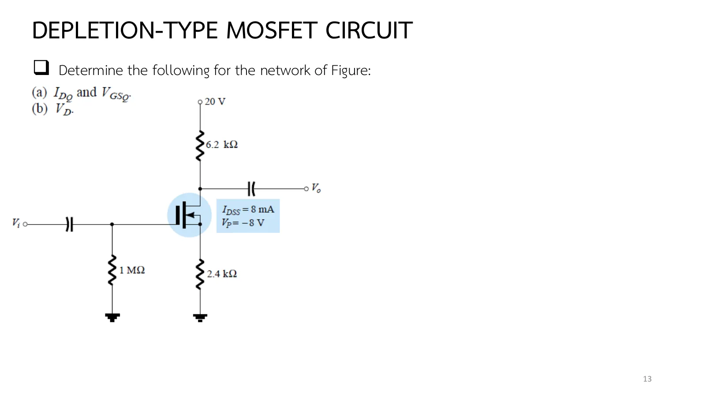

วงจรไบแอสของมอสเฟตแบบดีพลีชัน Depletion-type MOSFET circuits
Depletion-type MOSFET circuits The JFET analysis, with the curve continued past \(V_{GS} = 0\)
ถ้าถอดทรานซิสเตอร์สนามไฟฟ้าแบบรอยต่อ (junction field-effect transistor, JFET) ออกจากวงจรในบทที่ 5 แล้วเสียบมอสเฟต (metal-oxide-semiconductor field-effect transistor, MOSFET) แบบดีพลีชันแทน ต้องเรียนวิธีวิเคราะห์ใหม่ไหม คำตอบคือไม่: เส้นโค้งถ่ายโอนหน้าตาเหมือนกัน การวิเคราะห์จึงเหมือนเดิมทุกวงจร สิ่งเดียวที่เปลี่ยนคืออิสระที่ JFET ไม่มี: จุดทำงานข้ามไปอยู่ที่ \(V_{GS}\) บวกได้ และกระแสเกิน \(I_{DSS}\) ได้ คำถามจึงเหลือแค่ว่าต้องต่อเส้นโค้งเข้าฝั่งบวกไกลแค่ไหน และกระแสที่มากขึ้นจะดันจุดทำงานหลุดจากย่านอิ่มตัวหรือไม่ หน้านี้มีวงจรตัวแบ่งแรงดันที่ปรับได้ (ส่วน A) Example 7.6 และ 7.7 ที่ \(R_S\) เล็กลงจนจุด Q ข้ามไปฝั่งบวก Example 7.8 ไบแอสตัวเอง Example 7.9 ที่เกตต่อตรงกับซอร์ส และแบบฝึกเพิ่ม (สไลด์บทที่ 6 หน้า 9–15 · Boylestad หัวข้อ 7.7 และตาราง 7.1)
Pull the junction field-effect transistor (JFET) out of a chapter 5 circuit and plug in a depletion-type metal-oxide-semiconductor field-effect transistor (MOSFET): is there a new method to learn? No. The transfer curves look alike, so every circuit is analysed as before. The only change is a freedom the JFET lacks: the operating point may cross to a positive \(V_{GS}\), with a current above \(I_{DSS}\). What is left to ask is how far to continue the curve into the positive side, and whether the larger current pushes the operating point out of saturation. This page has an adjustable voltage-divider circuit (section A), Examples 7.6 and 7.7, where a smaller \(R_S\) pushes Q across to the positive side, Example 7.8 with self bias, Example 7.9 with the gate tied to the source, and more practice (chapter 6 slides, pp. 9–15; Boylestad section 7.7 and Table 7.1).
ประเด็นสำคัญของหน้านี้
- เหมือน JFET (สไลด์หน้า 9): \(I_G\) = 0 และสมการของ Shockley เหมือนเดิม ทุกวงจรของบทที่ 5 (ไบแอสคงที่ ตัวเอง ตัวแบ่งแรงดัน) วิเคราะห์เหมือนเดิมถ้าแทน JFET ด้วยมอสเฟตแบบดีพลีชัน
- ที่ต่าง: จุดทำงานอาจมี \(V_{GS}\) > 0 และ \(I_D\) > \(I_{DSS}\) ส่วนเดียวที่ยังไม่นิยามคือจะวาดเส้นโค้งเข้าฝั่งบวกไปไกลแค่ไหน: ปกติดูจากเส้นของวงจร แล้วเลือกจุดเดียวฝั่งบวกอย่างระมัดระวัง (Example 7.6 เลือก +1 V ได้ 10.67 mA)
- ตัวแบ่งแรงดัน (Examples 7.6–7.7): เส้น \(V_{GS} = V_G - I_DR_S\) หมุนรอบ \(V_G\) บนแกนนอน \(R_S\) ใหญ่ให้ Q ฝั่งลบ (7.6: −0.8 V, 3.1 mA) \(R_S\) เล็กให้ Q ฝั่งบวก (7.7: +0.35 V, 7.6 mA เกิน \(I_{DSS}\) = 6 mA)
- ไบแอสตัวเอง (Example 7.8): \(V_{GS} = -I_DR_S\) ลบเสมอ จึงใช้แค่ฝั่งดีพลีชัน ไม่จำเป็นต้องวาดฝั่งบวก (ตำราวาดให้ครบเฉย ๆ)
- เกตต่อซอร์ส (Example 7.9, ตาราง 7.1): \(V_{GS}\) = 0 บังคับ \(I_D = I_{DSS}\) ทันที ไม่ต้องวาดเส้นโค้ง · ไบแอสคงที่ (ตาราง 7.1): \(V_{GS_Q} = +V_{GG}\) ได้ เพราะเกตฉนวนรับแรงดันบวกได้
- ตรวจย่านเสมอ: \(V_{DS} \ge V_{GS} - V_P\) ยิ่งจุด Q อยู่ฝั่งบวก \(V_{GS} - V_P\) ยิ่งใหญ่ และ \(I_D\) ที่มากขึ้นก็กิน \(V_{DD}\) มากขึ้น (Example 7.7 ตกไปอยู่ย่านโอห์มิกเล็กน้อย)
Key points of this page
- As for a JFET (slide p. 9): \(I_G\) = 0 and Shockley's equation as before; every circuit of chapter 5 (fixed, self, voltage-divider bias) is analysed the same way when a depletion MOSFET replaces the JFET.
- What differs: the operating point may have \(V_{GS}\) > 0 and \(I_D\) > \(I_{DSS}\). The only undefined part is how far to draw the curve into the positive side: judge it from the network line and choose one conservative positive point (Example 7.6 takes +1 V, 10.67 mA).
- Voltage divider (Examples 7.6–7.7): the line \(V_{GS} = V_G - I_DR_S\) pivots about \(V_G\) on the horizontal axis; a large \(R_S\) puts Q on the negative side (7.6: −0.8 V, 3.1 mA), a small one on the positive side (7.7: +0.35 V, 7.6 mA, above \(I_{DSS}\) = 6 mA).
- Self bias (Example 7.8): \(V_{GS} = -I_DR_S\) is always negative, so only the depletion side is used and the positive side need not be drawn (the book draws it for completeness).
- Gate tied to the source (Example 7.9, Table 7.1): \(V_{GS}\) = 0 forces \(I_D = I_{DSS}\) at once, no curve needed. Fixed bias (Table 7.1): \(V_{GS_Q} = +V_{GG}\) is allowed, since the insulated gate accepts a positive voltage.
- Always check the region: \(V_{DS} \ge V_{GS} - V_P\). The further Q lies on the positive side, the larger \(V_{GS} - V_P\), and the larger \(I_D\) eats more of \(V_{DD}\) (Example 7.7 slips slightly into the ohmic region).
เมื่อจุดทำงานข้ามศูนย์ได้
When the operating point may cross zero
สไลด์หน้า 9 สรุปไว้ในประโยคเดียว: ทุกวงจรที่ผ่านมา ถ้าแทน JFET ด้วยมอสเฟตแบบดีพลีชัน การวิเคราะห์เหมือนเดิมทุกขั้น ความต่างข้อเดียวคือจุดทำงานอาจมี \(V_{GS}\) บวกและ \(I_D\) เกิน \(I_{DSS}\) ได้ เส้นโค้งที่เคยหยุดที่ \(V_{GS}\) = 0 จึงต้องต่อเข้าฝั่งบวก
วงจรที่จะใช้ดูเรื่องนี้คือ Example 7.6 ของสไลด์หน้า 10 (รูป 7.30): ตัวแบ่งแรงดัน 110 MΩ กับ 10 MΩ จาก 18 V, \(R_D\) = 1.8 kΩ, \(R_S\) = 750 Ω กับอุปกรณ์ที่มี \(I_{DSS}\) = 6 mA, \(V_P\) = −3 V ตัวต้านทานระดับร้อยเมกะโอห์มใช้ได้เพราะเกตเป็นฉนวน
Slide p. 9 says it in one sentence: in every circuit so far, replace the JFET by a depletion-type MOSFET and the analysis is the same at every step. The single difference is that the operating point may have a positive \(V_{GS}\) and an \(I_D\) above \(I_{DSS}\), so the curve that used to stop at \(V_{GS}\) = 0 must be continued into the positive side.
The circuit to watch it in is Example 7.6 of slide p. 10 (Fig. 7.30): a 110 MΩ and 10 MΩ divider from 18 V, \(R_D\) = 1.8 kΩ, \(R_S\) = 750 Ω, and a device with \(I_{DSS}\) = 6 mA, \(V_P\) = −3 V. Resistors of a hundred megohms are usable because the gate is insulated.


↓ ส่วน A: ลด \(R_S\) จาก 750 Ω ลงเรื่อย ๆ แล้วดูจุด Q ไต่ข้ามแกนตั้งไปฝั่งบวก
↓ Section A: lower \(R_S\) from 750 Ω step by step and watch Q climb across the vertical axis into the positive side
ตัวแบ่งแรงดันกับมอสเฟตแบบดีพลีชัน: จุด Q ข้ามศูนย์ได้
The voltage divider with a depletion MOSFET: Q may cross zero
เริ่มจากวงจรของ Example 7.6 กราฟบนคือเส้นโค้งถ่ายโอนที่ต่อเข้าฝั่งบวกแล้ว กับเส้นของวงจรจาก (\(V_G\), 0) ผ่าน (0, \(V_G/R_S\)) กราฟล่างคือเส้นโหลดบนลักษณะสมบัติด้านเดรนที่มีเส้น \(V_{GS}\) บวกด้วย ลองลด \(R_S\) จาก 750 Ω ลงเรื่อย ๆ: เส้นชันขึ้น จุด Q ไต่ขึ้นตามเส้นโค้ง ข้ามแกนตั้งที่ \(I_D = I_{DSS}\) แล้วเข้าฝั่งบวก (Example 7.7 ที่ 150 Ω) ป้ายบอกโหมดและย่าน
Start from the circuit of Example 7.6. The upper graph is the transfer curve continued into the positive side, with the network line from (\(V_G\), 0) through (0, \(V_G/R_S\)). The lower graph is the load line on drain characteristics that include positive-\(V_{GS}\) curves. Lower \(R_S\) from 750 Ω: the line steepens, Q climbs the curve, crosses the vertical axis at \(I_D = I_{DSS}\) and enters the positive side (Example 7.7 at 150 Ω). The badge names the mode and the region.
Example 7.6: ตัวแบ่งแรงดัน \(R_S\) = 750 Ω
Example 7.6: the voltage divider with \(R_S\) = 750 Ω
\(V_{DD}\) = 18 V, \(R_1\) = 110 MΩ, \(R_2\) = 10 MΩ, \(R_D\) = 1.8 kΩ, \(R_S\) = 750 Ω, \(I_{DSS}\) = 6 mA, \(V_P\) = −3 V จงหา (a) \(I_{D_Q}\) และ \(V_{GS_Q}\) (b) \(V_{DS}\)
\(V_{DD}\) = 18 V, \(R_1\) = 110 MΩ, \(R_2\) = 10 MΩ, \(R_D\) = 1.8 kΩ, \(R_S\) = 750 Ω, \(I_{DSS}\) = 6 mA, \(V_P\) = −3 V. Determine (a) \(I_{D_Q}\) and \(V_{GS_Q}\) (b) \(V_{DS}\).
แผงข้างภาพสร้างรูป 7.31 ทีละขั้น แล้วแสดงเส้นโหลดในขั้นสุดท้าย ลองตอบก่อน
The side panel builds Fig. 7.31 step by step, with the load line at the end. Try it first.
Example 7.7: \(R_S\) = 150 Ω และจุด Q ฝั่งบวก
Example 7.7: \(R_S\) = 150 Ω and a Q on the positive side
ทำ Example 7.6 ซ้ำด้วย \(R_S\) = 150 Ω
Repeat Example 7.6 with \(R_S\) = 150 Ω.
จุดสีเขียวในกราฟคือคำตอบจากเส้นโค้งตามตำรา จุดสีเหลืองคือจุด Q จริงของวงจร ลองตอบก่อน
The green point is the book's answer from the curve, the yellow one the circuit's actual Q. Try it first.
Example 7.8: ไบแอสตัวเอง
Example 7.8: self bias
สไลด์หน้า 13 คือ Example 7.8: ไบแอสตัวเองแบบหน้า 5.4 แต่ใช้มอสเฟตแบบดีพลีชัน เพราะ \(V_{GS} = -I_DR_S\) ลบเสมอ เส้นของวงจรจึงอยู่ฝั่งลบทั้งเส้น ก่อนเปิดเฉลย ลองตอบว่าวงจรนี้จำเป็นต้องวาดเส้นโค้งฝั่งบวกหรือไม่ และจุด Q จะอยู่ในโหมดใด
Slide p. 13 is Example 7.8: the self bias of page 5.4, now with a depletion-type MOSFET. Since \(V_{GS} = -I_DR_S\) is always negative, the network line stays on the negative side. Before opening the solution, decide whether this circuit needs the positive side of the curve at all, and which mode Q will be in.

\(V_{DD}\) = 20 V, \(R_D\) = 6.2 kΩ, \(R_G\) = 1 MΩ, \(R_S\) = 2.4 kΩ, \(I_{DSS}\) = 8 mA, \(V_P\) = −8 V จงหา (a) \(I_{D_Q}\) และ \(V_{GS_Q}\) (b) \(V_D\)
\(V_{DD}\) = 20 V, \(R_D\) = 6.2 kΩ, \(R_G\) = 1 MΩ, \(R_S\) = 2.4 kΩ, \(I_{DSS}\) = 8 mA, \(V_P\) = −8 V. Determine (a) \(I_{D_Q}\) and \(V_{GS_Q}\) (b) \(V_D\).
ลองตอบก่อน
Try it first.
Example 7.9: เกตต่อตรงกับซอร์ส
Example 7.9: the gate tied to the source
มอสเฟตแบบดีพลีชัน \(I_{DSS}\) = 10 mA, \(V_P\) = −4 V ต่อเกตกับซอร์สโดยตรง \(V_{DD}\) = 20 V, \(R_D\) = 1.5 kΩ จงหา \(V_{DS}\)
A depletion MOSFET with \(I_{DSS}\) = 10 mA, \(V_P\) = −4 V has its gate tied directly to the source; \(V_{DD}\) = 20 V, \(R_D\) = 1.5 kΩ. Determine \(V_{DS}\).
ลองตอบก่อน
Try it first.
ฝึกเพิ่ม
More practice
ลองทำดู 1 — จาก 7.6 ถึง 7.7
- ส่วน A ลด \(R_S\) จาก 750 Ω ลงถึง 150 Ω: จุด Q ไต่จาก (−0.8 V, 3.1 mA) ข้ามแกนตั้งที่ 6 mA ไปถึง (+0.35 V, 7.6 mA) ป้ายเปลี่ยนจากดีพลีชันโหมดเป็นเอนแฮนซ์เมนต์โหมด แล้วเป็นย่านโอห์มิกเมื่อ \(V_{DS}\) ตกต่ำกว่า \(V_{GS} - V_P\)
- คง \(R_S\) = 150 Ω แล้วลด \(R_D\) เหลือ 1 kΩ: \(V_{DS}\) กลับขึ้นเหนือ 3.35 V ป้ายกลับเป็นย่านอิ่มตัว และ \(I_D\) ตรงกับเส้นโค้งอีกครั้ง
- เพิ่ม \(R_2\) เป็น 30 MΩ: \(V_G\) = 3.9 V จุดหมุนเลื่อนขวา Q ขึ้นสูงจน \(I_D\) ไปไกลกว่า \(I_{DSS}\) มาก นี่คือเหตุที่ตำราบอกให้เลือกจุดฝั่งบวกตามเส้นของวงจร
ลองทำดู 2 — ทำไมไบแอสตัวเองไม่ข้ามศูนย์
- ข้อ 3: เส้น \(V_{GS} = -I_DR_S\) ผ่านจุดกำเนิดและมีความชันลบ มันอยู่ในจตุภาค \(V_{GS}\) < 0, \(I_D\) > 0 เท่านั้น ไม่ว่า \(R_S\) จะเป็นเท่าใด การเข้าฝั่งบวกต้องมี \(V_G\) บวกจากตัวแบ่ง (ข้อ 1–2) หรือ \(V_{GG}\) (ตาราง 7.1)
- ข้อ 4: ถ้าเพิ่ม \(R_D\) เป็น 2 kΩ: \(V_{DS}\) = 0 V? ไม่ได้ — กระแสจะถูกจำกัดโดยย่านโอห์มิก ตรวจด้วยส่วน A ของหน้า 5.3 หรือภาพจำลองข้อนี้ (ชี้ที่ทรานซิสเตอร์)
Try this 1 — from 7.6 to 7.7
- In section A lower \(R_S\) from 750 Ω to 150 Ω: Q climbs from (−0.8 V, 3.1 mA), crosses the vertical axis at 6 mA and reaches (+0.35 V, 7.6 mA); the badge changes from depletion mode to enhancement mode, then to the ohmic region once \(V_{DS}\) falls below \(V_{GS} - V_P\).
- Keep \(R_S\) = 150 Ω and lower \(R_D\) to 1 kΩ: \(V_{DS}\) climbs back above 3.35 V, the badge returns to saturation, and \(I_D\) agrees with the curve again.
- Raise \(R_2\) to 30 MΩ: \(V_G\) = 3.9 V, the pivot moves right and Q climbs far above \(I_{DSS}\). This is why the book says to choose the positive-side point according to the network line.
Try this 2 — why self bias cannot cross zero
- Problem 3: the line \(V_{GS} = -I_DR_S\) passes through the origin with a negative slope, so it lives only in the quadrant \(V_{GS}\) < 0, \(I_D\) > 0, whatever \(R_S\). Reaching the positive side needs a positive \(V_G\) from a divider (problems 1–2) or \(V_{GG}\) (Table 7.1).
- Problem 4: with \(R_D\) raised to 2 kΩ, \(V_{DS}\) = 0 V? No: the current would be limited by the ohmic region; check with section A of page 5.3 or this problem's simulation (hover over the transistor).